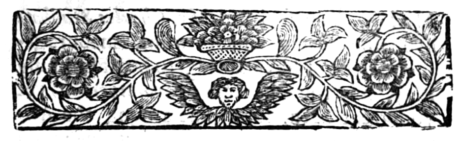
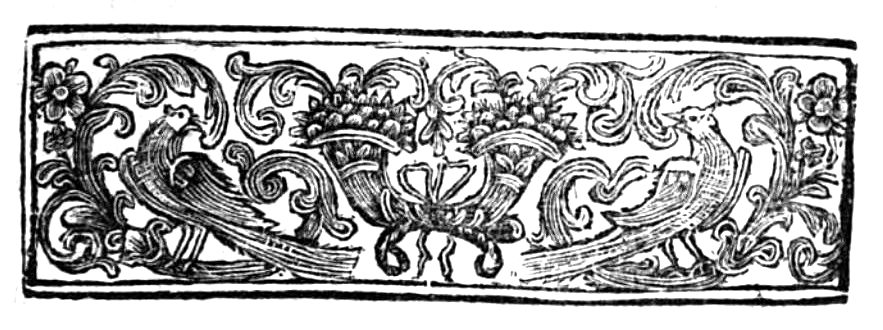
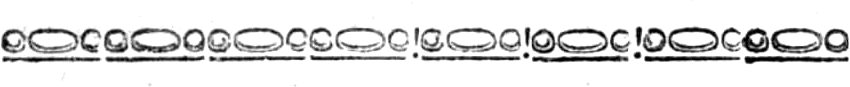
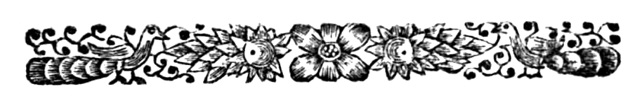
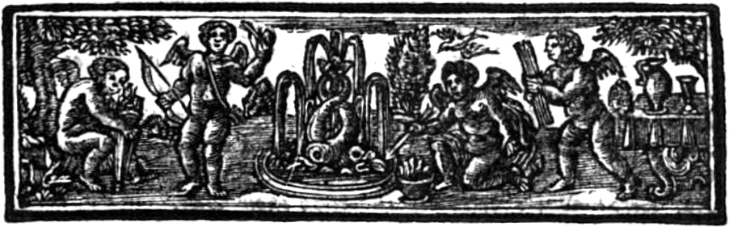
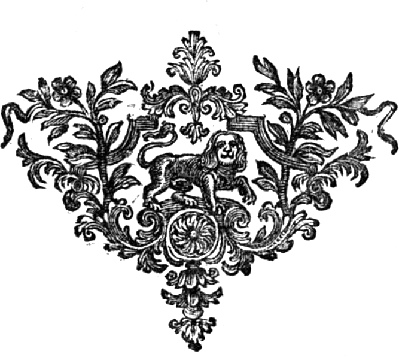

i
HURLOTHRUMBO:
OR: THE
Super-Natural
As it is Acted at the
NEW-THEATRE,
IN THE
HAY-MARKET.
Written by Mr. Samuel Johnson, of
Cheshire.
Ye Sons of Fire, read my
Hurlothrumbo,
Turn it betwixt your Finger and your Thumbo,
And being quite outdone, be quite struck dumbo.
LONDON:
Printed for the AUTHOR And,
Dublin: Re-Printed by James Hoey,
and George
Faulkner, at the Pamphlet-Shop in
Skinner-Row
opposite to the Tholsel, MDCCXXIX.
iii

TO
The Honourable the
Lady DELVES.
MADAM,
When I think of your Goodness, it gives me Encouragement to put my
Play under your grand Protection; and if you can find any thing in it
worthy of your Praise, I am sure the Super-Naturals will like
it. I do not flatter when I say, your Taste is universal, Great as an
Empress, Sweet and Refin’d as Lady Malpas, Sublime as Lady
Sarah Cowper, Learned and Compleat as Lady Conway,
Distinguishing and Clear as Mrs. Madin, Gay, Good and Innocent
as Lady Bland. I have often thought that you are a Compound of
the World’s Favourites, that all meet and rejoice together in one; the
Taste of Montagu, Wharton,
ivor Meredith,
Stanhope, Sneid, or Byrom; the Integrity and
Hospitality of Legh of Lime, the Wit and Fire of
Bunbury, the Sense of an Egerton, fervent to serve as
Beresford or Mildmay, belov’d like Gower. If you
was his Rival, you’d weaken the Strength of that most powerful
Subject. I hope your eternal Unisons in Heaven will always sing to
keep up the Harmony in your Soul, that is Musical as Mrs.
Leigh, and never ceases to delight; raises us in Raptures like
Amante Sposa, Lord Essex, or the Sun. If every Pore in
every Body in Cheshire was a Mouth they would all cry out
aloud, God save the Lady DELVES! that illuminates the Minds, of
Mortals, inspires with Musick and Poetry especially,
Your most Humble Servant,
Lord FLAME.
v

TO
The Right Honble the
Lord WALPOLE.
My Good Lord,
I Return Thanks to Heaven, which is in you, I mean your Taste, that
would not continue, except it was cherish’d with Vertue, that Parent
of Eternal Love; ’tis all Palate hungers after, intellectual Food,
Generosity, Harmony; the lofty Lines of a sublime Pen: and these
beautiful Perfections in you, have been the Chief Support of my Play.
At this Time there are as many fine Poets in England as ever
there were; but they will not write, because they say there is nothing
encourag’d but Noise and Nonsense. But I believe those Bards are
mistaken; for so long as the Lord Duke of
viMontagu,
Yourself, and Mr. Charles Stanhope live, fine Poetry will not
want Encouragement: tho’ I have nothing to boast of in my Play, but
the Character of Soarethereal, yet you great Men, that shine
among the Angels, did condescend to support me; and no one is more
thankful than
Your LORDSHIP’S
very humble Servant,
SAM. JOHNSON.
vii
PROLOGUE.
By Amos Meredith, Esq;
Near is my Shirt, but nearer is my Skin.
|
Rules were by Coxcombs made to cramp the Mind
By Nature free, unfetter’d, unconfin’d,
She mounts a Flame, and flies, astride the Wind.
|
|
|
Through boundless space wings her Celestial Way,
And Eagle-ey’d confronts the Source of Day;
Criticks begone, avant ye Sons of Clay!
|
|
|
To every Star its Name and Course assign,
In narrow Bounds the swelling Tides confine,
And teach the Ruler of the Day to shine.
|
|
|
Sluggish the servile Mule sustains the Weight;
Wolves bait the Moon because she shines so bright;
And Owls are blinded with Excess of Light.
|
|
|
Unchain’d by Art with true Poetick Rage,
In Buskins highly rais’d, we tread the Stage;
With Fire from Heaven, to thaw the frozen Age.
|
|
|
The God of Number and melodious Strains,
Triumphant drives through Empyrean Plains,
Impetuous bound the Steeds nor hear the Reins
|
|
|
If Soar-æthereal’s Characters too high,
For mean Conception shocks the vulgar Eye,
Let filthy Mire accuse the Azure Sky.
|
|
|
Diamonds to Swine are despicable Things,
Lost to the Mole the Vernal Verdure Springs,
And Adders hiss tho’ Senesino sings.
|
|
|
The Priestess speaks of him that gilds the Skies;
Behold he comes, behold the God she cries:
And swells, and foams, and rolls her frantick Eyes.
|
|
|
Hark to the Noise a hundred Doors around,
Spontaneous jarr, the vaulted Roofs rebound,
And Words burst forth with more than mortal Sound.
|
|
viii
Persons of the Drama.
MEN.
Soarethereal.
Hurlothrumbo.
Dologodelmo.
Darony.
Urlandenny.
Theorbeo.
Lomperhomock.
Darno.
Primo.
Puny.
Temo.
Col. Countermine.
Genius.
Spirit.
Death.
Lord Flame.
WOMEN.
Cademore.
Sermentory.
Seringo.
Lusingo.
Cuzzonida.
1

HURLOTHRUMBO:
OR, THE
Super-Natural.
ACT I. SCENE I.
Enter Dologodelmo and Hurlothrumbo meeting.
Dolo. Hurlothrumbo, how goes the Muse?
Hurlo. Dologodelmo, have you heard the News?
Dolo. What News?
Hurlo. Darno, Urlandenny, and Darony, have
coin’d their Estates into Money.
Dolo. But for what reason?
Hurlo. Certainly Treason.
Dolo. Pray describe yourself in Prose.
Hurlo. It will be describ’d in Blows.
There’s more in the Wind
Than the wise Philosophers can find.
Dolo. No Storms, no Rebellions, I hope.
Hurlo. Nothing less, ’tis Pride, curs’d Pride, but let them
climb to fall.
2Dolo. Pride,
Pride is the Serpent’s Egg laid in the Hearts of all; but hatch’d by
none but Fools! Pray what says the King to these Adventures?
Hurlo. Say! he says and he says not, cares and he cares not,
he’s King and he’s no King; his high-born Soul is above the Sublunary
World, he reigns, he rides in the Clouds, and keeps his Court in the
Horizon; He’s Emperor of the superlative Heights, and lives in
Pleasure among the Gods; he plays at Bowls with the Stars, and makes a
Foot-ball of the Globe; he makes that to fly far, far out of the reach
of Thought.
Dolo. But if he despises this World, and resides in the Climes
above, how must we fill our empty Troops below?
Hurlo. Oh take no thought for that, for when the least Spark of
the stifled Fire appears, then Jupiter, Mars, the King,
will rise with all the Gods to keep the Rebels under: They’ll make
Drums of the Elements and Skies, and beat up for Volunteers in
Thunder.
Enter Sementory and Seringo.
Ser. Can you guess at the Cause of the King’s excessive
Melancholy?
Sem. ’Tis Love, all Love; in his Travels he came to the Court
of Spain, where he fell in Love with Cademore, the
King’s most beautiful Daughter; and Theorbeo, her elder
Brother, is link’d in Friendship with Soarethereal. The King of
Spain has promis’d his Daughter Cademore in Marriage to
the King of France; but Theorbeo’s Passion for our
Soveraign, was the Cause of his helping his Sister in the Escape from
the Arbitrary Power of a Father, and is daily expected to arrive in
this City: So ’tis Fear, Hope, Love is the Cause of his Distress.
Ser. See, see, what frantick Man is this?
Sem. It is my Lord Flame, distracted in Love with you:
Fall back, let us hear his Soliloquy.
Enter Flame, with a drawn Sword in his Hand, throws it on
the Ground.
Fla. Thou Key of my Soul, unlock me not, I will not die and
leave her behind amongst corporeal Rivals; that she
3was dead, alive,
amongst the purest Spirits: Oh that this too, oh too, too dear, tender
fond Heart could yearn, and sigh no more! Constancy destroys me, Love
makes me Heavenly, and Tears refine the Soul: as a Pilgrim I will
travel till a Hermitage I find; I’ll mourn, I’ll wander to
Ovid’s solitary Tomb; I’ll pity that poor unfortunate Man; I’ll
think of her I love the most, and pour out my Tears upon him; there
will I prostrate myself, and may I slumber till the heavenly Harmony
wakes the sleepy dead.
[Enter Sementory and Seringo.
Oh! the deluding Creature,
Stings me from every Feature;
When you strive to gain me,
You only mean to pain me;
Cruel Deceiver, Heaven leave her,
Let her not come above,
To taste the Sweets of constant Love.
[Exit.
Sem. Oh Seringo, entice not a Man to Love, except you
design to marry: If a radiant Beam dart from the Fire of the Eye,
’twill touch his Inclination like Nitrous Powder, and flash through
all his Veins, discompose his Faculties, and infect his Soul: I am
sorry for this poor Man, ’tis dangerous to continue here, let us leave
the place.
[Exit.
[Scene changes, and discovers the King Sleeping upon a Couch.
Enter to him Dologodelmo.
King. Oh Godelmo, why hast thou call’d me home to
myself?
Dolo. I came according to your Majesty’s Commands.
King. As in Dreams the Souls of Hermits in secret Extasies are
catch’d away by Angels, so was my Spirit in transport charm’d by the
Image I most admire; she retreated, and at a distance gaz’d and lov’d,
then eagerly flying to my Arms, she stifled me with Kisses; but like
to Sin you call’d me away from Heaven. Oh! my Cademore, that I
might die always thus to live with thee; for when the Fetters of
Slumber have link’d these Limbs and the Ground together, when the
Chains of Sleep have bound this Body to the Earth; when these Eyes,
these Ears are insensible, I have
4other Eyes that see,
other Ears that hear, and myself rejoices when myself is dead.
[The King sits down and pauses, then rises.
Dolo. The Solitarys wait without, and humbly desire admittance.
King. Do you know their Business?
Dolo. They come with sublime Tidings from the cœlestial World,
and will yield your Majesty pleasure through their own Simplicities.
King. Let them appear. [Exit Dolo.] These Men despise
the Company of Mortals, and say they delight more in the Shadow of
something, than to converse with a Nothing in Substance.
Enter Dolo. and six Solitarys.
Primo. My Sovereign Lord, we think ourselves in Duty bound to
inform you of all the Ills that threaten both your Person and your
Crown, that seems to be surrounded by many Adversaries.
King. How are you inform’d of this?
Primo. In Parable Visionary, deliver’d down and explain’d in
Hieroglyphicks.
King. But after what manner?
Primo. We all in one Night had the fame Vision; gazing
stedfastly upon your Dominions, the Hills sunk down to Vales, and the
Valleys rose up to Mountains, upon which a Giant stood, swelling huge
with arroganting Poison; his horrid Visage reach’d the Skies, grasping
a Sword in his Hand that flam’d from Earth to Heaven, glittering on
high, and blaz’d in Elemental Fire, upon whose mighty Edge, Death rode
triumphant: Then in Fury, as Lightning upon the Wing, slunk down,
hissing through the Air, the Wind from which, blasted every Head of
us, and this Head is you my Sovereign Lord.
King. Did this appear to all?
Primo. All, all, all.
[Ex. Solit.
King. If Calamity be the Parent of Wisdom, why do the Afflicted
depend on Dreams?
Dolo. Your Majesty has no cause to fear.
King. If Hurlothrumbo is brave, there is no danger.
5Dolo. Was not
his Courage truly try’d in Rome.
King. But after what manner?
Dolo. By the Emperor’s Imperial Command he was forc’d into the
Amphitheatre, there to be devoured by the hungry Jaws of a Lion;
disarm’d he enter’d, taking from his Heel his Ammunition Spur, he
wrench’d it wide, and gripe’d it thus.
Enter Hurlo.
King. Hurlothrumbo, give me a Description of the Combat.
Hurlo. The Door of the Den was no sooner lifted up, but the
Monster hugely rouz’d himself aloft, stalking gravely he enter’d,
flinging from his Talons sedentary Pain, with Scarlet fiery Ogles
ken’d all around; but when I saw the Beauty of Greece, my Heart
was all Granade, I had an Army within, a Centry guarded every Pore,
and this Compound of Elements thundred. The Lion came at me amain,
with Jaws open, dreadful as the Mouth of Hell, he sprang aloft, I
glanc’d, he mist me, then with rebound he turn’d, and by the Main I
caught him as he flew, and over his Back I threw myself astride; then
with my Knees I crush’d his Ribs and Heart together, and with my
Right-hand Spur I cleft his Skull: I bruis’d the Pan of his Brain,
till Flashes of Lightning flew swift from his Eyes; I stabb’d his
Sight, he twisted, he grinn’d, he turn’d and loose he broke, bloodily
blind as he was, in raging Storms, in circling Whirlwinds flew; his
burning Heart, that swell’d with Anguish, Fury and Revenge; his Talons
tore the Earth, rent the Flints, he gnaw’d the Ground, and Choler
boiling over, churning Dust, Blood and Foam, he roar’d tremendous.
King. ’Tis a furious Description; but how did you conquer him?
Hurlo. My Coat I roll’d up thus, and hurl’d it to his Breast;
then eagerly grasping the Prey, I march’d towards him, I spurn’d at
his Heart; he reel’d, I retreated; he recover’d, I advanc’d; again I
struck, then trembling, he disgorg’d a Flood of Gore, and stifling
with the Stream, bolt upright he rose; I pursued my Strokes, he
fainted, he sunk, he shiver’d, he died.
6King.
Hurlothrumbo, ’tis bravely done; search out into all the World,
pick the Universe, bring to me every thing that’s noble in the Mind,
empty of Ambition and full of Greatness, that I may feast their Bodies
and satisfy my own Soul; for when my Crown adorns the Head of a worthy
Man, then I enjoy it, and wear it truly, in the inward Raptures of my
Heart.
Hurlo. ’Tis most certain the learned Larmo is worthy of
Honour.
King. I know him well, he has a thousand Perfections, though in
him I discern the Spark of Avarice, it seem’d to me like the infernal
Eye of Lucifer, ’tis a Canker that encreases and infects the
Mind, let no such Man be trusted; give me he that is like
Theorbeo, that has ventur’d and lost his Crown for his Friend:
Is he yet arrived?
Hurlo. He is.
King. Go tell him, I’ll come and rejoice in his Presence.
[Ex. King and Dolo.
Enter Urlandenny and Darno.
Urlan. Darno, a good Day to you, how prospers our
Design?
Darn. Far exceeding our Expectation, I’ve sold my Estate for a
hundred thousand Pounds; it is to be return’d for the same Money, if I
require it, in seven Years.
Urlan. Mine is equally secured; this is a Defence against Ill,
but now we’ll speak for thy self; I am inspir’d with a Thought that
will overthrow the Government, that makes as strong as Atlas;
I’ll make——
Enter Flame.
Fla. The Flight takes me in the Head to give you a Description
of the War of Angels, the black ones and the white ones; now you are
of the dark kind, but they were conquer’d.
Urlan. How Prophetick the Man talks, as if he knew our Designs?
The Tongues of Children, Fools and Madmen have often fortold my Fate.
Darn. You are superstitious.
7Fla. And as I
was saying, Army in Array against Army, stood solemn, profound, before
the Cloudy Van, Expectation stood in Horrour, and Satan, with
vast and haughty Strides advanc’d, came touring, arm’d in Adamant and
Gold.
Enter Darony.
Dar. Who do you mimick, my Lord?
Fla. The Devil, Sir.
Dar. I resent it.
Fla. Draw.
Urlan. Hold, he is repeating a Passage in Milton; his
Wit is borrow’d, he’s a Moon-light.
Dar. I’ll excuse him as a Lunatick.
Urlan. I recommend to thee a Miss, as a Specifick to assuage
this mighty Fever in the Brain.
Fla. I am unstain’d, not touch’d with any black Crime, above
the World, upon a lofty Mountain, and next Neighbour to the Sun.
Urlan. Now condescend the Woman lies two Yards below you, go
down, tick, toy and play with her, ’twill cool your Blood, and sweeten
your sour Juices.
Fla. Then how shall I ascend again to my grand Original Height?
’tis up Hill; Woman pulls, Nature hangs heavy upon the feeble Soul,
and Resolutions weak; no, Conscience is an intellectual Caul that
covers the Heart, upon which all the Faculties sport in Terror, like
Boys that dance upon the Ice, if one cracks, another breaks, then all
together plunge in over Head and Ears most horrid.
[Ex. Flame.
Urlan. Pray what new Adventures at Court?
Dar. A poor King is arrived at Court, and
Dologodelmo Oratorys high Encomiums upon the mighty
Soarethereal, declares he’s like the glorious Sun, extends his
Beams to all and every part of the World; and as he rides along the
Meridian Course, every feeble Plant beneath him is cherished,
and rises up revived.
Urlan. The Simile is not good: The Sun gives Life to the Plants
that reside far off, but those that grow under him are burn’d, and
scorch’d to Ashes. ’Tis plain, Foreigners are most encourag’d, and we
that pay the Taxes receive
8not the Benefit of
Office; Soarethereal
declares all the World are his Country-men, and he that has the
greatest Soul, to him is the nearest a-kin: but to the Purpose, what’s
to be done? The Mob of this City must be highly prejudic’d in our
behalf.
Dar. They are all secure to a Man; I have distributed amongst
them a hundred thousand Pounds; let’s away to the Lord Urme, he
will strengthen our Design.
[Ex. Darony, Urlandenny, and Darno.
SCENE, Cademore’s Apartment.
Enter Cademore and Lusingo.
Lusin. My good Lady prepare, the King comes.
Cade. O Lusingo! I could longer taste the Sweets of
Expectation dear, I’d view the beautiful œconomy of this Court, his
Person at a distance, and Motion of his Soul, that moves and reigns in
my Breast; we may enjoy the greatest Bliss too too soon. Was I to
leave this World, and take my Flight to the celestial Heights, I’d
first visit yon distant Moon; then tow’ring high I’d visit the
brightest Situation of the Sun; then climb amazed up to the Stars; I’d
taste the Sweets of every Orb, before I enter’d Heaven.
[Ex.
Enter King, Theorbeo, and Hurlothrumbo.
King. Theorbeo, thy constant Heart mourns for thy
Mistress, not for the Loss of thy Crown; the Powers are jealous of
Love like thine, and Heaven is only worthy of it, and only capable to
make a return.
Theo. Your Majesty talks like a separate Soul, not like one
that is cloathed with Nature.
King. I beg pardon, I touch your Sore; I long to attend thee to
the Throne with a hundred thousand Men.
Theo. I return your Majesty thanks; yet hope, that no one will
venture his Life for me: the Life of a Friend is more than a Kingdom.
King. Venture my Life! what is my Life? let me not pass through
this World, the common Road to Eternity; fade away through the
blasting Word from on high, that
9mingles with the
Air, and makes all Men mortal; I had much rather surrender this Life
up an offering, and die in the Service of some dear Friend; in
Vehemency of Spirit, and Fervency of Friendship, I could plunge
through a Flood of Fire to deliver a Friend from the Jaws of a Lion.
Theo. I do believe ’tis in your Majesty’s Power to establish me
upon my Throne; but all Nature in my Breast is chang’d; that which is
Gall to another, is Honey to me: Life is bitter, and makes Death
sweet. What is a Post of Honour to a Man who thinks he has enough, and
has no Ambition? He that will be rich, must destroy Ambition; Ambition
is a Monster not to be fed, never satisfied till he is starved out.
King. ’Tis true, Hurlo; from whence proceeds Ambition?
Hurlo. A Man’s Heart and his Bladder changes Places.
King. And what is Honour?
Hurlo. Honour is, and it is not; yet Honour is to be found.
Theo. My Intellect has rang’d in pursuit of Honour throughout
the Universe, nay, even to the Skies, but found it not.
Hurlo. O it’s on t’other side, my Lord.
King. O Theorbeo, I admire how a Man can so much despise
Power?
Theo. True Power lies in the Mind, or Strength that can sway
the Faculties.
King. I beg pardon for interrupting; I must beg leave to see
the Lady your Sister.
[Ex. King, Theo. and Hurlo.
[Scene changes, and discovers Cademore, Seringo,
and Lusingo.
Enter King, and salutes Cademore.
Cade. Oh he’s here! O my Soul starts, and my Heartstrings
shiver!
King. O my Cademore, now I live: as that great Sun
revives this lower World, and makes all Nature rejoice in his
Presence; so you cherish and revive my Heart, all my Faculties rise up
in Raptures: A thousand sublime Thoughts
10spring up in my
Soul: Is there any thing in my Kingdom can yield you Pleasure.
Cad. Every thing here is pleasing to me. Seringo, Let
the King hear the musical Description of Arsinoe’s Dancing.
Ser. Brisk and Airy, tript with a Fairy Air of Scorn,
Sink in the rising, all surprizing Charms adorn.
Swift and Gay in every Part,
And flies away with every Heart:
Return’d them back with cold Despair,
Which much reviv’d the jealous Fair.
The End of the First Act.

ACT II.
Enter Urlandenny and Darony.
Daro. What News, my Lord?
Urlan. All things are in readiness according to your desire;
Darno is raising an Army in the North,
Lomporhomock is now landing in the South with 20000 Men,
and when the Tidings reach the King’s Ears, he’ll extend his Army to
the North and to the South; then, when his Forces have
left the City, the 500 Men which I have hired, for what Purpose they
know not, but exactly at two a-Clock in the Morning, each Man is to
fire a Gun upon the House-top; this repeated three times, will drive
every wandering Soul home to his Body, and raise him from Sleep
surprized.
Daro. That’s true.
Urlan. You and I with a small Body of Men, will march through
the City with a Shout, saying, The City is surrounded with Foreigners,
Fire and Sword, Fire and Sword! rise, rise quickly, rise to Arms.
11Daro. That’s
good; then in a moment’s time we shall be at the Head of 100,000 Men.
Urlan. We’ll plunder Misers Houses, distribute their Bags,
hurling the Coin among them, like Hounds besmear’d with the blood of
Prey, mount Resolution upon the Heart, ride furiously, Whip and Spur,
and with deep mouth’d Tones, full Cry, and in that Vehemence of
Spirit, they will devour a savage Lion. We’ll prejudice them against
the King, lead them to the Court, and take possession of all.
Daro. So farewel, my Lord; remember two a-clock.
[Exeunt severally.
Enter Sementory and Seringo.
Serin. Sementory, to thy Tire.
Sem. I’m weary of Dress, pall’d with Pleasure, sick of the
event of vain Hopes: Some say that Marriage is made in Heaven; but
’tis my Opinion, if all the Harlots were sent to the Grand
Turk, there would be more Weddings celebrated in Heaven than
there are; I perceive the Fire of the Men is all out.
Serin. Very true, Sementory.
Sem. They gaze upon a Woman, as they do upon a Bill of Fare
after Dinner.
Sem. Oh Seringo! where shall I find a vertuous Man, like
such a one that I have seen, chaste, and full of Rapture? Rapture is
the Egg of Love, hatched by a radiant Eye, that brings to Life a
Cupid in his Breast. In thy Company he’s tasteless of Food and
Wine, he’s restless, he’s empty of Words, and full of Sighs, is in a
shivering Ague chill’d; then in a moment rais’d by the high Fever of
Love, is in extatick Raptures, his Opticks are like two Balls of Fire,
and look as fierce as if he took Gunpowder-Snuff; could you love such
a one?
Serin. How gay, how free, how merry is he!
How full of Charms to move!
His Soul is full of Love.
12Enter Hurlothrumbo.
Sem. What, not a Word? sure ’tis pain to speak?
Hurlo. My Tongue is Thought’s Midwife, and has been a gossiping
all Night with a very fine Lady, and is not able now to perform her
Office.
Sem. The rich Molotto Lady, I presume?
Hurlo. She is rich, do you not like her for that?
Sem. But give me the Man that’s like the Bee,
That flies round and round the Field to see,
To taste of every Herb, to chuse the Sweet, to miss the Sour,
He hovers and sings, and sucks the true Vertue from the Flower:
But the mean Soul like yours that courts for Money,
Is like the Wasp, will settle upon a Nettle for a little Honey.
[Ex. Sementory and Seringo.
Enter Theorbeo.
Hurlo. The King will instantly wait upon your Majesty; but is
now engaged in the Affairs of the Government.
Theo. After what manner are you govern’d?
Hurlo. Spiritually and Temporally, King, Lords, Commons,
Parsons, Clergymen and Divines,
Theo. What is a Parson?
Hurlo. A Parson is——I beg pardon, the King comes.
[Ex. Hurlothrumbo.
Theo. Adam before Eve was made, longed for
something he knew not what; I long for something more than Eve,
I know not where.
Enter King.
King. Theorbo, why meditate yon thus? that Soul of thine
that came from Heaven, longs to leave me, to soar aloft and travel
home; grieve not thus for a Woman, I myself am tender, yet bold; I
often weep in a fine Lady’s Presence, but in a moment can conquer that
Passion, and 13venture
my Life with a Lion; can lay my Hand under the Foot of an humble
Beggar, or take a lofty Emperor by the Nose.
Enter Hurlothrumbo.
King. Hurlothrumbo, what Tidings from the World?
Hurlo. Not any that will please your Majesty; here are some
poor Men petitioning you for Charity.
King. That will doubly please me; I relieve them as Men, and
satisfy the Thirst of Compassion, at the same time, my Soul’s invested
with sacred Pride, think I am highly honour’d, and entertain the Gods.
Hurlo. Here is also a poor Prince sends to borrow Money.
King. That will also please me; I receive the Borrower with
more Joy than him that comes to pay a Debt.
Enter Flame.
Flame. Beggars be gone, these Men sell Land upon the blue
Plains; see what a Figure they cut, who’ll buy any? Oh you, I know you
well, (pointing to the King) you are the most covetous Man in
the Universe, you give what you have away to the Poor, that you may
enjoy it all yourself; and when your time is to die, you’ll not leave
a Farthing behind you to fling away. I return you thanks for the Post
of Honour you offered me; but does your Majesty think a Soul like mine
was born for Servitude? No; I’ll sooner be an Alexander in my
own Park-Pale: He that lives in Pleasure runs up a Score, and he that
is afflicted, is paying Debts; this is Spirit; what has Flesh to do
with that? A Coquet in the Soul, a Harlot for the Devil. I am a Man
amazed in Love, Nature is hot and too much fudled with Fire; in the
out-raging Jealousies of my Soul, I rent my Brain, and when my Rival
was with her. I ran distracted to her Cheeks, I kiss’d, I curs’d, I
bless’d, I wept, an Earthquake in my Breast, Thunder and Lightning in
my Head, that storm’d down Tempest, and burst my Heart. Oh what is
Woman! I am sadly in Love, I am not well; do kill me, O pity a Lover.
[Ex. Flame.
14King.
Hurlothrumbo, what is thy Opinion of this Man? my prophetick
Soul loves him.
Hurlo. I advise him to starve himself, from a Horse to a Man;
for if he dies at this time, he’ll be metamorphos’d into a wild
Elysian Colt.
He’ll cock his Tail, he’ll praunce and stare,
Will gallop, snort, and snuff the Air;
And all his Thoughts will be of——
King. Pray tell me how does Love affect thee?
Hurlo. When I see a Lady with a full Chest, flat Back, falling
Shoulders, a long Neck, and a languishing Air, every Pulse beats up a
March vehemently towards her; I touch, I muse, I am in a Trance, a
pleasing Stupidity, Astunment, my Faculties are on fire, a Smoak rises
in the Eyes of the Mind, Reason is deaf, the Intellect blind, my
Nerves creep, I shiver; charm’d in Terror, the Body trembles in the
Bargain of buying Raptures with the Soul.
King. ’Tis not Love, it’s Temptation.
Hurlo. ’Tis a Description of a Combat, in which all Men are
conquer’d.
King. Not so, Hurlo, I will speak for myself: Ambition
high rose up in the Mind, to fight with Vertue, in the beauteous Fair;
and she a superlative Venus of the World; I was Fire, and
Faculties keen; she was Love with languishing Retreat, but when she
surrendred all to my Will; I struck not the Vanquish’d, but conquer’d
myself.
Hurlo. ’Twas a noble Retreat, your Majesty bravely run away.
Enter Servant.
Serv. The Lord Dologodelmo waits without to speak to
your Majesty.
[Ex. Theorbeo, Hurlo, and Servant.
King. I am at leisure——From whence this Distress in my Breast
of late, restless Nights, horrid Visions, affluster’d Spirits fly
around my Heart; my prophetick Soul, like Argus, discerns
Destruction approaching.
Enter Dologo.
Dolo. If it be a Crime to bear ill Tidings, your Majesty’s
Goodness will oblige you to pardon.
15King. Speak,
speak Godelmo, thou art my Friend.
Dolo. Lord Darno has sold his Effects at home, and is
now raising an Army in the Northern Parts of your Majesty’s Dominions;
Darony and Urlandenny are set out for the South, with
the same Design.
King. Go, Dolo. and bring Theorbeo hither to me.
[Ex. Dolo.] Oh, who shall deliver me from the Contagions of
Mortals! that I had been born in humbler State: Ye rural Shepherds, ye
Companions of Angels, I envy you: that I could be like to you, my
Ambition only to reach the Top of a Mountain, to lean upon my Staff,
there to admire the beautiful Œconomy of the Universe, listen to the
Linnets, Larks, and Nightingales, that warble forth their Praise on
high; to the Sun they offer up their Joy: these would teach me to be
grateful. Of my Lambs, that innocently sport all around me; of them I
will learn Humility, and despite your Arrogance: my Dog, that scouts
upon the Plain, I’ll compare him with you, and blush for you: he loves
more, and is constant, a fervent Friend, will fight till Death for his
Master, rises not up against him when he smites him; he’s grateful, he
flatters not, and to your shame, has more Compassion; for with his
Tongue he’ll heal the Wound of the Oppressed. Ye Rationals, learn of
Brutes; and teach me to abhor Mankind.
[Exit.
Enter Theorbeo and Dologodelmo.
King. Theorbeo, you say your desire is to exert yourself
in the War, I had much rather you’d stay; what say you?
Theo. ’Tis my desire, that my Spirits may rouze and shake off
these heavy Elements; the shining of my Soul is over-whelm’d with
Clouds, I long to discharge this heavy Hail-storm upon the Heads of
all your Adversaries.
King. Godelmo, is there any danger?
Dolo. There is not; when the Enemy hear the King’s Trumpet
sound, it will be as when the Lion roareth in the Forest, every
Monster’s Heart will tremble, and in a moment fly to their Dens for
shelter.
King. See that Draughts are made out of my Troops,
1620,000 of the most
proper Men. This moment I’ll review my Army.
[Ex. King and Theor.
Enter Hurlothrumbo, out of Breath.
Dolo. What’s the matter now, my Lord, you seem to be out of
Breath?
Hurlo. Out of Breath! I may well be out of Breath, the Wind may
well rise, the Conjurers are all at work, I have a Tempest in my
Belly.
Dolo. Pray let the Storms cease, and let me hear the Cause.
Enter King.
Hurlo. Cause! Cause enough; one Lomporhomock, a
Dutch Officer, is just landed with 200,000 Men.
King. Go this moment, and get my Troops in readiness, and I’ll
give them the meeting myself.
[Ex. Hurlo. and Dolo.
I am rais’d above the common Height of Man, lifted up to the rattling
Climes of Discord, where Dologodelmo and
Hurlothrumbo rumble along the Sky, and says the Element begins
to crack; but as the Lightning flies before the Thunder-clap, so shall
Darony fly before me, or Death shall swallow me up.
But yet, shall I in this tempestuous Season,
In furious headlong bid farewel to Reason?
No; in Storms all Fools are hurrican’d in Mind,
But Wisdom gently moves upon the swiftest Wind.
To fight, and in the heat of Blood, in an Agony, drop into Eternity,
and carry the Fire with me. O! let me not pause, let me not think, for
if I think, Divinity will make me like a Lamb, and then persuade me to
be a Coward; no, I’ll go and recommend
My Cademore’s Charms to happy Fate that sent her, Then fly
to War’s Alarms, and both my Lives will venture.
[Ex. King.
Enter Sementory and Seringo.
Serin. I am all at War within.
17Sem. So much
in Love with two Men! alas thy Combat will do you no harm; you admire
Darone for his Honour, and Hurlothrumbo’s Bravery.
Serin. Oh advise me.
Sem. Of all Happiness, that is the most sweet that is the
nearest to us; Riches lie in the Purse, Love in the Heart: never marry
for Honour, or Title; Fame is always at a distance; the Man I love is
near. What is Fame? a Word; that Word is Wind, the humming of a Bee:
but when I sleep by the Man I love, no Wind can come to me.
Enter Flame, and sings.
Sem. So, my Lord, your Aid is required at the Wars.
Flam. I’ll fly from the War, Love and War always jar; there is
no Calm in Love and War; let my Seringo live with me, then
farewel Honour, farewel Care.
[Exit.
The End of the Second ACT
ACT III.
Enter Hurlothrumbo and Dologodelmo.
Dolo. Hurlothrumbo, are you ready to mount?
Hurlo. ’Tis confounded dark, must we not stay for the King?
Dolo. No; the Princess Cademore will not hear of his
going to the Wars; at the Sound of the Word, she faints, sinks and
dies away.
[Exit Dolo.
Enter Servant with a Letter, delivers it, and Exit.
[Hurlo. reads it.
Hurlo. Oh ’tis from Darony!
Make me the next Man to the Crown, if I desert the King; how
can I do that? Why did he not ask me to murder my dearest Friend,
curse the Deity, or debauch a Man’s Wife, and separate their Souls
eternal? It will preserve a great deal of Blood, that’s true.
So long as Theorbeo
stays, thy Honour wears like a Garment: may be so; I’ll
consider of this.
[Exit Hurlo.
18Enter Darony and Urlandenny.
[Guns fire at a distance.
Daro. They’re punctual to the time.
Urlan. True, my Lord.
Daro. This is the Place we’ll fix our Standard; now the Guns
are discharg’d, the Men from every end of the City with a Shout will
come to this Place, and stir not you an Inch till
Lomporhomock enters the City. Who comes there?
Enter Temo.
Temo. A Friend and Servant of thine.
Urlan. What is thy Name, and thy Business here in the Dead of
Night?
Temo. My Name is Temo; as to my Business, ’tis secret.
Urlan. You are the famous Inchanter; can you tell us what
Adventures will happen, the cause of the Guns firing thus early?
Temo. ’Tis the first Volly of a mighty War; this Morning
exactly at two the Battle will be rehears’d first in the
Elysian Fields.
Urlan. Is it not possible for me to see it?
Temo. ’Tis possible.
Urlan. Accept of this Purse of Guineas; let me see, the time is
now expired.
[Temo stamps, a Spirit rises up, and gives him a Talisman.
Temo. You shall, my Lord; hold this firm to your right Eye:
tell me what you see.
Urlan. I see the Elysian World, ’tis light as Noon of
Day, and all us Mortals act in yonder Climes: I see myself, I see
Hurlothrumbo; Hurlo kisses a Lass; the Spirits smile; I
stir my Hand, it moves yonder. Mars stands in the Element, and
beholds the People; they divide, and make two separate Armies; Death
stalks among the Croud, marking his own Appointed. Oh! he makes
towards me! oh! he’ll touch me; take it I’ll see no more.
[A shout behind the Scenes, Fire and Sword! Fire and Sword! rise quickly.
19Daro. This is
Puny’s House, the Miser, break it open.
Urlan. Forbear, forbear he’ll rise and open the Door; fall
back, he comes.
Daro. I’ll go head the Mob, break open the King’s Treasury, and
satisfy their Thirst with Gold; then will I take possession of his
Person, and his Crown.
[Exeunt.
Enter Puny.
Puny. Oh bless me! Fire and Sword! I shall not live three
Minutes! if my trembling Limbs permit me, I’ll kneel, I’ll pray Heaven
preserve my poor Soul; these Villains will come in a moment, and take
every Penny of my Money; I desire I may be forgiven all my Sins. These
Rogues are coming, they’ll rob me, take my Plate, and break my
Windows: O sweet Heaven forgive me all my ill-dreamt visionary
Lewdness! If they come, I shall never purchase Kemp’s Estate,
but buy a Coat of Arms, and a Patent for my Son.
Enter Urlandenny and Temo.
Urlan. So old Gaddecar, you’re at Prayers, cry aloud,
thy Deity is deaf, with your squinting Soul that kens both Earth and
Heaven; fling your Bags into the Elements, then will you look straight
upright: Be gone, what hast thou to do in this World? What dost thou
mean?
Puny. I mean to be the Root of a Family.
Urlan. If the Root be Avarice, what will the Body, Branches,
Leaves and Fruit be? Twenty Generations must pass away, before thy
Seed can be refined so far, as to produce a Gentleman.
Puny. Is not Gold a Gentleman, a Person of Quality? What makes
a Gentleman?
Urlan. Education, Honour, and Generosity; add to a fine
Gentleman Love, Resolution, Taste; a Person of Quality has all these
Perfections, and is discerning, with a sublime Thirst in the Soul; a
longing to reward Merit; fervent to serve the meanest, and punctual to
his Word; his Blood is double and treble refin’d; he’s full of Heaven;
a Sunfire; a Light that quenches all the Flame of Nature;
20he lets himself down
to converse with great Men and Angels, that are in Intellect but three
Inches high.
Puny. Cannot a new-born Gentleman have all these Perfections?
Urlan. No, your Upstarts are huge, and tall, converse with a
Prince of the Air, and their Nostrils are full of the Devil.
[Ex. Pun. and Tem.
Drums beat. Enter Darony.
Dar. Now, my dear Friend, all is secured, the King is in
Chains.
Urlan. What Drums are these?
Dar. Lomperhomock, the Dutch General.
Enter Lomperhomock.
My Lord Lomperhomock, you’re welcome to Court.
Lom. I wish you much Happiness of your Crown, when it is
secured.
Dar. I hope there is no Danger.
Lom. ’Tis my earnest Desire that you will instantly execute the
King; for while he’s living, all his Friends will rouse up like Lions,
but when they hear he’s dead, ’twill greatly oppress their Souls.
Dar. He shall instantly be executed.
Lom. Then I’ll march in Pleasure, and meet his Army.
[Ex. Urland. Dar. and Lom.
The Scene changes to the King in Prison.
King. I would ask Relief of Heaven, though ’tis in vain, when
all the eternal Infernals are turn’d out loose upon me, to pour out
their flaming Cataracts of mighty, limited Revenge.
Enter Lomperhomock.
Lomp. Pardon me, oh King, I am come to inform you, at Six a-Clock
this Morning is your appointed Time to die.
[Ex. King.
21King. Let
them strike me, let these Clouds pass away; let them break the Sky
within me, that I may truly see, enter Orbs like the Sun; see Spirits,
Angels, and the radiant Fields: but what is that to a Man in Love, a
Man whose Heaven’s here? Oh my Cademore, who can bear the Pangs
of parting! since we must part, ’tis death to live.
Enter Cademore.
King. O Executioner art thou come, bring to me a Taste of
Torment, a Rack of Nature, like Heaven’s Vengeance, to afflict my
Soul? Still thou art my Friend, and something more than Woman, my
Prospect-Glass to Paradise; thou Emblem of Eternity; oh how great’s my
Thought of Heaven, whilst my Eyes are fix’d on thee! For if the way to
live with you, lay through the Shades of Misery, to lodge in
tremendous Caves of Darkness, one single Thought of thee would fill
Obscurity full of Light, and make it like a Palace adorn’d with
Diamonds: but now, oh now, what is my Hope, a Man is never destitute
of Hope; but my dear Expectation, my Spring of Life, is now become the
Sting of Death: for every Thought of thee shoots through my Heart; and
at a Sight of thee, oh ye Goddess! that I could love thee less, and
Heaven more.
Cad. I am sorry I encrease your Grief, I come in hopes to
mitigate your Pain; for every Sigh that proceeds from you, pursues me,
and ecchoes in my Breast.
King. That I believe, it must be so; ’tis so in Love, ’tis so
in Musick, ’tis so in Souls; the fine in Raptures sympathize with
cœlestial Joys, revived by all their Unisons in Heaven; but to free
thee from Pain, I’ll think no more of Life below, but fly to nobler
Thoughts, and pursue my Hopes in Happier Climes.
Cad. Cease not to vent your Grief for my Relief, ’tis my
Delight to share with you in Suffering; but rather wish that all may
be fixed on me, that I may take them to some gentle Stream, and then
to lay me down to stifle all in Waves; and there, oh there, let my
Spirit expire.
King. Nay, no more of that, if thou be my Friend, hate me, be
lewd, be infamous, that I may banish thee;
22oh let me banish
thee from every Glance of Thought, that I may take my Sleep, my
lasting Sleep in Peace.
Cad. Name not that to me.
King. Name not what?
Cad. Your Death, my Lord.
King. ’Tis Death to resign up thee, to yield thee into others
Arms; oh my Cademore, be a Virgin still, for if you marry, you
part from me, and make me jealous in Eternity.
Cad. Let no Thought of that arise, the Pangs of your Death will
always smart in me, keep me from all and every Thought of Man.
King. The Pangs of my Death smart in thee, there is no pain in
Death, the Sound of your Words is Musick to my Soul, and makes the
ever-living Youth rejoice, and leap for Joy, being ripe for birth,
desires to go to Life; but this Body, this timorous Mother Earth; alas
she shivers, and dreads the Hour of her Travail, but when that Midwife
Death in Life shall give me Birth, Oh! may it be in that Kingdom where
thou in long Eternity shall shine; and if my Happiness be no more than
what I conceive in thee, and that to last for ever, then let the World
say I am nothing, I am dishonourable, the Crown of my Head is dropped
from the Kingdom of my Body, so that I may say I live with thee, but
when we part.
Cad. O my Soul!
King. O Heaven!
Cad. Oh Angels!
King. Burst Heart, and let me fall.
Cad. Oh Death! quickly to my Aid.
King. Oh my Cademore, live!
Cad. If it must be so, come visit me after Death.
King. Oh how can I promise that? If this great Sun should
refuse his Heaven, and slide from Orb to Orb, leave the Elements,
prostrate himself on the Earth, fall a Victim at thy Feet, it would
only serve to surprize and fire thy Heart; blind thy mortal Eyes; and
lest the Garment of the Intellect be thus incomparable and Glorious,
make me not promise, for if I promise, ’twill make me uneasy in
Heaven, ’till I perform my Word; but if I can entreat to thy Guardian
Saint, then I’ll attend thee all the Day, hover
23and settle upon thy
Pillow all the Night, where I’ll converse with thee in Visions, and
when thy Time is full done, I’ll wait and watch the closing of thine
Eyes, and then will I catch away thy Soul in a Divine Transport; with
Cœlestial Wings we’ll soar to the Lofty Mountains in the Clouds, when
they shall dissolve like a Bed of Down; our inward Hearts shall kiss
each other in Love, in Extasy, and then we’ll fly away together from
all Adversity.
[Cademore faints, and is carried off the Stage.
Oh my Soul stealeth from me.
Clippeth and hangeth upon thee.
[King lies down.
Enter Theorbeo. The King rises.
King. Oh Theorbeo, I perceive there is an End of Hope;
it was my fear they would conquer thee, and bring thee to this Place
of Adversity.
Theor. It is not so, my Lord, I have left your Troops in trusty
Hands, and am come here, that you may make your Escape in my Habit;
and by that Time you have reach’d to the Army, I being a Stranger,
will pass the Centry again, and come to your Majesty.
King. ’Tis an inspired Thought, we’ll put it in Execution.
[The King dresses himself in Theorbeo’s Clothes.
Oh Theorbeo, grieve not, every Sigh of thine, will make my
Heart to weep Drops of Blood; consider a small Affliction by chance
may happen; but these great Calamities, must proceed from something
Great; and if so, it is Philosophy to rejoice.
Theor. But Nature conquers Philosophy, and is a match for
Divinity: I am sometimes at wars with my Will, whether to fly to Sin
for Refuge, or to Heaven for Relief.
King. My Lord I’ll haste away, and in one Hour expect to see
you again.
Theor. When I think you’re safe, I’ll follow.
[Ex. King.
24Enter Dologodelmo guarded.
O Godelmo, what brings thee to this Place of Misery? Speak
quickly, though I dread to hear.
Dolo. May all the Ills that are preparing in the Elements, be
dash’d on the Head of Hurlothrumbo, that I might die, and my
Soul join with his Adversary; I’d fly swiftly with the Ball, and
direct it to his inward Heart.
Theor. Curse him not; has he deserted you?
Dolo. We no sooner entered the Field, but he joined the
Adversary; may Heaven pour down upon him the bitter Blessings, the
Honey Curse, the gilded Pill, that satisfies Desire, and infects the
Mind; give him Riches, and make him love them, then will he be
abhorred of Men, the Spirits, the Angels, and the Gods: may a proud
Sign appear in his Face, that he may be a Tavern for Devils to riot
and banquet in; let him pamper Nature, feed high, to destroy his
Taste; so blind all the Beauties of the Mind; then will his hungry
Pleasure devour up all the eternal Treasure of his Soul.
Theor. Godelmo, let thy Passion cease.
Dolo. O pardon me, I must be alone, and burst my Heart with
sighing.
[Ex. Dolo.
Theor. O that Heaven would erect an Altar where Man might
sacrifice himself an Offering; then surely the Blood of great Men
would dye the Spring, the Rivers, and the Seas. O my Soul is full of
Calamity, and my Heart is sore with Sorrow.
Enter Flame.
Fla. Just now my Rival is with her; I tremble thus in the
solemn Gloom, the Noon of Night; my wakeful Soul can find no rest, but
from a jealous Dream I start, I rise amazed, in the Face of the
Elements, bow, sigh, and think of Sorrow; I wonder what the Moon
thinks of me. Oh when, oh when, shall Time and Sorrow cease! Surely
Cupid’s Dart is the Sting of Death; oh dear Death, oh how I
25could hug thee. What
Sign is it when a Man’s Heart is broken?
Theor. That he is in love.
Fla. Come, do, let you and I weep together, and pour out all
the sour Anguish of our Souls: Women are cruel Creatures; tho’ I could
kiss her a thousand thousand Times; oh ye inconstant Wretch, yet I
will press my Check to thine, weep, sigh, and part Eternal; Oh!
Oh you dearest Creature,
Heaven is seen in every Feature
Is there no such thing, as learning Charms to move?
No, no, no, ’tis Gold and Honour makes the Fair to love:
Angel, ’tis in vain, if you come like a Swain,
With all your Harps and Arts, and Sweets to please from Jove.
ACT IV.
Enter Bellman and Sings.
Good Morn, good Morn, my Masters all good Morn!
Whilst I poor Mortal wander here below,
You what’s most pleasing know,
No Charm’s so deep, how charming, how sweet
It is to fall within the fair Enchantress Arms asleep;
But if I chance to wake you with my Bell,
Be sure you let my Mistress know you’re well;
And if you please her, as you ought to do,
She’ll thank you, Master, and the Bellman too.
Enter Sementory and Seringo.
Sem. I have had no Rest this Night, my flustrated Spirits, my
troubled Soul rais’d me from my Couch to my Terrass, where I beheld
all Nature in Confusion, the City
26in Uproar, the Brave
in Distress; Spears of Fire, fighting in the Elements; the King’s
Solitaries scrambling up the lofty Hills, by the Light of the Moon;
they prostrated themselves on the Ground, and invoke Heaven for good
towards their Master.
Ser. I laid me down, and could not rest, I am uneasy for want
of Sleep.
Sem. Who can sleep when a Lover’s false! This Morning
Cademore intreated for the Life of the King; and as she kneel’d
before Darony, her Sighs, her Tears, her Beauty has made him
passionately in Love with her; yet chear up thy self, and still have
hopes; when a Woman has a mind to gain a Man, she may study his
Constitution, and what he likes.
Ser. Oh Sementory, I have had cruel Dreams.
Enter Hurlothrumbo.
Hurlo. Ladies, what are you upon now?
Sem. Dreams my Lord.
Hurlo. Can you interpret, Madam?
Sem. You’re sure of my best Endeavours, my Lord.
Hurlo. As I was alone in my Chair, I slumber’d, I thought
myself mounted before a beautiful Wife upon the solemn Desarts of
Arabia, where a dark, black Cloud overwhelm’d the Desart; a
stormy, tempestuous Wind arose, and ripped up ragged Rocks, then drove
them furiously over the Plain, like tremendous Bullets of Thunder; and
all the dreadful Engines of eternal Misery rose up in Arms; I was in a
Moment surrounded with wild Monsters, fighting with one another which
should devour me first; my Horse tired, my Wife fell in Labour, the
Element opened her fiery Mouth, and pour’d out Cataracts of Lightning
and Hail; all the Pile of Building in the other World was tumbling
down upon my Head, and how I came into my Body, I know not.
Sem. You’re happy you had a Body to shelter you: this
prognosticates you’ll endure great Calamities, and at the last lose
your Mistress.
27Hurlo. This
is my Mistress; Darony, my Rival, is dead in Love to thee;
since he’s cruel and inconstant, pour out thy Grief in merry Sounds;
you must part.
Ser. Part, and never meet no more:
How can I bear to see that gloomy Day,
No, no, no, no, I’ll be a Soul, and fly away,
In merry Sounds, I will pour out my Pain,
And never think of Man again.
[Ex. Sem. and Ser.
Enter Primo.
Hurlo. Honest Solitary, what brings thee to Court to-day?
Primo. I am come in hopes to see our Lord and Master
Darony.
Hurlo. He will be here instantly, and desires you will be
Counsel to him, as you was to Soarethereal.
Primo. When he is King, I will be his Subject; till then, I am
fervently so to my Soveraign.
Enter Darony.
Hurlo. Much Joy to your Majesty; I perceive Heaven’s Frowns are
departed from your Dominions: what an Alteration in the Elements! and
all Nature seems to rejoice; Phœbus till now hath ceas’d to
shine upon the foggy Globe for many Weeks.
Dar. This Morning I perceiv’d the bright Angel in the Sun, that
water and warms this lower World, drive away swiftly the Clouds from
his Presence; he open’d high the Casement of Heaven, and sweetly
smiled upon me.
Hurlo. Primo, what thinkest thou of that?
Primo. When I gaze upon the Sun, I sink into myself, full of
Humility; I also learn Lowliness of the Moon; when she looks over the
Brow, and begins to rise, she’s huge and dull; she swells like an
outstretch’d Hero; but as she climbs, she clears, she soars aloft
diminutive, that she may shine among the Stars.
Hurlo. Mr. Humility, your humble Servant.
28Primo. Every
one that petitions must be humble, or else his Petition will not be
granted.
Dar. Art thou a Petitioner?
Primo. In the Name of Soarethereal I am, who fervently
desires the Life of Theorbeo.
Dar. He shall not perish by the Hands of Man; but I have sworn
a mighty Thirst of Revenge; he shall take his Chance in the Room of
burning Glass: be thou humble still, and petition Heaven; cry aloud in
Vocal Perspiration of thy Soul; thy Words, like Thunder, sound in the
Elements, and alarm the Angels on high; then if thou hast Power above,
let Phœbus cease to shine, or Theorbeo cease to live.
Primo. Then he must not live.
Dar. No, he shall not live.
Primo. Oh how Men condemn themselves!
[Ex. Primo.
Dar. Compassion is a Weakness in Man, it may become a Woman;
not but I feel the Failing in myself, tho’ I conquer it and keep it
under, lest it should appear to the World.
Hurlo. That’s true, my Lord.
Dar. I am inform’d Soarethereal is in a Wood with 20000
Men, and designs to conquer there or die; and I myself will be there
present at the Slaughter.
Hurlo. There is no danger of him, my Lord; he is surrounded
with 60000 Men, and was he a Grashopper, he could not escape your
Armour.
Dar. Then I’m at peace within; yet Cademore still runs
in my Mind: let us haste to her Apartment, and if she will not consent
to marry, I’ll force her.
[Exeunt.
33
SCENE, a Prison.
Enter Theorbeo, and Dologodelmo
looking on his Watch.
Theor. Our Time is almost expired.
Dolo. I think this Finger is like the Dart of Death, upon the
Figure of Twelve sits my Life; Oh how it steals to sting!
Theor. Those are melancholly Thoughts, think not of Death, but
of Life, or of any thing that will divert thee most.
Dolo. When I think my King is in misery, and Darony upon
his Throne; when the Noble suffer, and Miscreants are blest, then my
Faculties within me rejoice; there is a secret Thought in that, which
revives my very Soul.
Theor. A small Offence unthrones the Noble, but infamous
Actions raise a Tyrant.
Enter Guards and Executioner.
Theor. After what manner must we suffer?
Dolo. In the Room of burning glass.
Theor. Then what means this Executioner?
Dolo. If the Sun destroys us not, as he rides along the
Meridian Course, by this Man we must be slaughtered.
Offic. My Lord, your Time’s expired; Guards attend here.
Enter Flame.
Fla. But hold, I’m come to give you a Description of your happy
Flight to the Elysian: Your Neck’s no sooner laid to the Block,
but the Stroke’s given; immediately your Soul begins a March through
all the Elements: in the Body first, you’re confin’d five Minutes in
the Regions of Fire, amazed, amidst the verdant green Climes of Water
and Air; you pass then heavily through the solemn Gloom of
34Earth; you go, you
faint, the Soul bows, farewel to Nature; you fall into a dark, black
Slumber, a Trance; and when the Spirit touches you upon the Elbow, you
wake surpriz’d in a World of Light; there you see Shakespear,
Milton, Homer, sprightly, alert, alive, flying swiftly
through the radiant Climes, to visit the Wits of every Generation; the
Rich, Poor, the Merry, Mournful; the pamper’d, hungry Souls are there.
Alas, the Scene is chang’d, you’ll not pity them; Queen
Eliz. is in her Hut, selling of fry’d Fritters;
Pompey and Alexander carry Charcoal to feed her Fires;
the Great Mogul, the Czar, the grim Bashaw, the Emperor, the Grand
Turk and Cæsar, are scrambling for the Drops of the Pan, and as
they are wont, are scuffling for Trifles, till it raises their
inextinguishable Rage to Loggerheads, cutting, flashing, carbonading
Nero’s Buttocks; nay, they’re all fighting in Blood up to the
Ears, and there is the Devil to do amongst them.
[Exit Flame.
Theo. Dologodelmo farewell.
Dolo. Our Time is come to part.
Theo. Farewell, my Lord farewell, this World is all Departure;
Oh that I could appoint a Place to meet thee after Death; yet through
the ranging of my Soul at Liberty, I’ll surely ken thee afar; methinks
I see thee shine upon the brightest Mountain in the highest Orb,
stretching forth thy self, and pluming thy immortal Wings, preparing
to take thy everlasting and eternal Flight; and when we meet to part
no more, may all our Song be Love, in Divine Tranquility.
Dolo. This lofty, sublime Speculation, proceeds from your own
Virtue, not from my Merit; for if the Work of this Life, makes a
Garment for the Soul, mine will be stain’d with Avarice, Debauchery
and Revenge; you are Innocent: O Innocence! thou only Traveller to
Heaven, farewell for ever.
[Ex.
35
SCENE, a Wood.
Thunder and Lightning. Enter King.
King. What a Smell of Sulphur is here? Was ever Day like this?
surely all the Infernals are rising up in Arms, in Thunder, Lightning,
and Hail; the Air’s in a Flame; I think my self in the Sun, expecting
every Moment to be dissolv’d, and Conscience smiles.
[Ex. King.
A Genius descends in a Cloud, and Death
enters upon a pale-dun Horse.
Death. Thou Genius of the King, confront me not.
Genius. Oh Death, thou long-liv’d Mortal, say for what art thou
come, thus proudly aloft, and hieroglyphick mounted?
Death. To Wars, Victory, Revenge, with Stings from
Lucifer my imperial Grandfather; I drive my Parent Man from
Nature; I’ll die, be born again, and pursue him in Eternity.
Genius. Thus when Man commits a Crime, he creates a Fiend to
fight against him: remember thou Toad of Hell, all the Elements that
compound the Nature of Mortals, are now conspiring against thee.
Death. Discord horrid!
Genius. Thou Off-spring of Sin, that is, of that Nature that
will draw upon it all the eternal Vengeance of Heaven!
Death. Thou mak’st me tremble.
Genius. Tremble thou, when yon marble Sky shall rent, flashing
swift as the Lightning glimpse away; when crimson Elements appear, and
Fury rides on flaming Winds, and spreads himself abroad, deep in the
Bowels of this Globe shall wake, nay twice ten thousand Thunders,
renting the rocky Mountains, and hurling Kingdoms to the
36Sky; Cataracts of
Fire, and purple Storms shall rage, and hurricane thy infernal Soul.
Death. Discord horrid!
[Ex. Death.
Enter King.
King. Man, what is thy Business here to interrupt my Solitude?
Genius. I follow the Oppress’d, where I often find Relief.
King. What is thy Name?
Genius. My Name is secret, I was Tutor to a young Man, and when
I corrected him to cure Pride, he resisted and rose up against me, and
for that Reason I have left him for a Season.
King. And will Calamity cure Pride?
Genius. Behold yon pamper’d high-fed Colt, unoppress’d, at
ease, unbroke, he leap’d his Mounds, and sported all abroad; he saw a
Lamb, a Nightingale, a Dove; he started, snorted, and bridled with
Disdain, with twisted Neck and cocking Tail, with bended Knee he
bounds away, disdaining all he sees; but now his Back is stain’d with
Saddle-marks, his Mouth is gaul’d with Bridle-bit; and he that
despis’d the Lamb, the Dove, the Nightingale before, now is tam’d, and
feeding with a Goose and Boar.
King. Alas! I pity thee; here is all the Money I have, and this
Ring; ’twas given me by one I most admire.
Genius. But why do you give me all?
King. I am distress’d my self, and design to ask Relief of
Heaven.
Genius. I will speak of thy Generosity, and force my Words to
the highest Heaven; Angels will love and long for thy coming on high;
rapp’d with thy Fame will wing away, warbling as the Swift, to meet
thee in thy flight.
[Ex. Genius.
King. From whence this inward Joy, as if the Musick of the
Spheres, and heavenly Song, penetrate the Sky, and eccho in my Soul.
37Enter Officer.
Offic. I am inform’d from the City, that Darony has
taken Possession of all, and is now crown’d, and the People greatly
rejoice: Lomporhomock and Hurlothrumbo are come down
with an Army of 60000 Men, and threaten in a Moment to destroy you and
your Troops.
[Ex. Officer.
King. The excessive Storm blows up the Fire of my Soul, and
makes me long to fight; every String of my Heart is firm, is stony as
the Lion’s Nerve; it rises in my Breast, it leaps, it yearns; Oh great
is my Desire! I am all athirst, not for the Blood of my Adversaries,
but for the Freedom of my Friends.
Enter Officer.
Offic. Theorbeo is at the Place of Execution; he desires to be
interr’d under his Statue in the Grove, that if you ever come to your
Kingdom, you may sometimes walk and think of him.
[Exit Officer.
King. Oh when shall this Dramatick World be done! but yet with
me indeed it is. Oh when shall the End of all Things come! When shall
the Musick of the Spheres break out! like Trumpets found Alarms, and
Thunder in Bases roar? Oh when shall the glittering Crouds of Angels
tread the Stages of the Sky, to sing the Chorus at the End of Time!
Sing, oh Chant, with Sounds to metamorphose Man; and make me, oh make
me any thing but what I am!
Enter Officer.
King. Why do you pause?
Offic. I fear to speak.
King. Speak, for I dread not to hear; this Moment I will fight
and die with my Army.
Offic. The Princess Cademore is now forc’d in Marriage
to Darony.
[Exit Officer.
King. O there is the Sting! Have I lost, for ever lost, every
thing that’s dear to me in Life, my Crown, my Mistress,
38and my Friends? Rise
up now, thou Strength of Reason, and pull down the Passion of my Soul;
oh let the Curtain of the Clouds be lifted up, the Scenes, the
Elements depart asunder; and may some piercing penetrating Eye in
tender Pity gaze upon me!
Enter Officer.
Offic. The Enemies assaults us in our Trenches, we must either
fight or die, and only wait for your Majesty’s Commands.
King. Depart, I’ll instantly be with you. [Exit
Officer.] Yet hold, 20000 to engage with 60000, there must be great
Courage or Contrivance, tho’ I have known brave Men naked have beaten
Cowards in Armour; I have also heard of the
Grecian Contrivance, their Horse: I scorn to overcome by
Stratagem, no, I’ll raise up the Spirit of my Army; I’ll give them to
drink Brandy mix’d with Gun-powder, and in the Anguish and Bitterness
of my Soul, I’ll slash it through the Veins, and mingle it in the
Blood of every Man, that they altogether may be one in the Image of a
Dragon.
With fiery Heart and flaming Eyes,
To every Part the Sulphur flies;
The Wings extend, the thorny Points display,
The Sting from Mouth ascends, and shuts for happy Day:
The Heart, the Eyes, the Sting, the Feet, the furious Claws,
Mount all up on the Wing, and fly amidst the Foes;
Then Lightning from the Nostrils flies.
Swift Thunder-bolts from Anus, and the Mouth will break,
With Sounds to pierce the Skies, and make the Earth to quake:
And if one Part should chance to fail,
I’ll prick him on with speary Tail.
39
SCENE, Cademore’s Apartment.
Enter Cademore and Seringo.
Cad. See who comes here?
Serin. ’Tis the Lord Flame.
Enter Flame.
Flame. My Soul is outrageous in Pursuit of my Rivals, and
mounts my Body Upon the Wing; flies through the Woods, rips up the
lofty Oaks, splits the Rocks, plows up the Seas. Oh this scandalizing
World! disgrace the noble Oliver, and say, that he is
Gunpowder-maker to the Devil; and that Lucifer reads the
Scriptures, that he may plead against Mortals. See, see those two
glow-worms how they glitter; these are Cleopatra’s radiant
Eyes, just scrall’d up from her Body, ambitious to vie against the
Stars: How vain is Woman! veil thy Bosom, those heaving Monsters fire
me; oh that I was a Child again, that I might suck!
[Exit Flame.
Cad. I pity this poor unfortunate Man, I feel his Distemper
approach my Brain.
Enter Darony, Cademore turns from him.
Daro. Dear Lady fly me not, stay and hear me speak;
Ovid’s Words in Bonon’s Sound, cannot describe the
Passion of my Love.
Cad. Cruel Man, follow me not; if you love me, do not augment
my Torment.
Daro. I am come with Comforts to feed the distressed Soul, I
love.
Cad. What in me, do you admire?
Daro. Your Person, Madam.
Cad. They are Brutes that marry Bodies; the Mind is all that
can be loved; the other is a Desire proceeds from
40Nature vicious,
urged by Food and Wine: Live low, and you’ll not love me.
Daro. Oh ’tis in my Soul, I admire the Mind!
Cad. Then if you converse, you enjoy; what can you ask for
more?
Enter Hurlothrumbo, and a Parson.
Hurlo. Come along, Sir, the King will make you a Bishop.
Daro. My Love, my Life, my Fire, to thee shall all be given;
I’ll make thee taste of earthly Joys, and fetch thee down from Heaven:
A Power that will without controul,
Knock down all the Centrys of the Soul.
Sir, perform your Office.
[Speaking to the Parson.
Par. Madam, are you willing to be married?
Cad. I am not.
Hurlo. Never mind that.
Par. ’Tis my Sovereign, and I must obey.
Enter Flame, with Pistols, and a drawn Sword.
Fla. This Dagger will I heat red-hot in the crimson Blood of
Darony, with which I’ll spear the Heart of Seringo, that
Weather-cock; I’ll raise it upon some Pinacle or Spire; it shall ever
whirl about with every Blast; myself I’ll dissolve into Air; I’ll make
the stormy Winds to blow, the petty Breezes shall have no Power; but
I’ll reign King of Tempest.
Hurlo. My Lord, can I serve you? Do you please to accept of
Assistance?
Flame. Hurlothrumbo, what hast thou done with Seringo,
hid her in thy Belly? Speak, in a moment speak, or I’ll rip it open,
and let her out.
Hurlo. O no! ah hold! oh pray give me leave, and I’ll answer
you!
Fla. Speak! quickly speak! or like a Griffin stuff’d with Fire
and Gunpowder, I’ll blow thy Limbs and Stings to every Part of the
Globe!
41Hurlo. Oh ye
Powers inspire me with Madness, that I may answer him in his own
Language! [Aside.] If you please to let us go, my Lord, we’ll
this Moment mount her upon the Back of the Sun; in the mean while, you
get a stradling upon the Moon, there you’ll be mounted aloft, and ride
after her, spur and whip, whip and spur, and you’ll be sure to
overtake her in the Eclipses; there you’ll be clapp’d together, Face
to Face, one upon another; and all the World will shout and say, he
has her, he has her, he has her! huzza!
[Darony, Hurlothrumbo, and the Parson, shout and Ex.
Fla. Ride on, Lightning, to perform, or I’ll drive you on with
Thunder.
Serin. Dear Lady keep him in Discourse, for your own Security.
Cad. My Lord, you seem to be in Distress, is it in my Power to
assist you?
Fla. No; my Soul, like a Jocky, is mounted and riding his
eternal Race; I have slackned the Reins of Nature, and the Beast
pulls, is pampered with too many Beans and Oats, and is running away
with me to the Devil.
[Exit Flame and Seringo.
Cad. Pity! I have heard of Pity, surely Pity now is banish’d
from the Earth, and all the Spirits of Love are lock’d up fast in
Heaven. Was I once free from this miserable Cave of Nature, I think I
could deny myself even of Paradise, to fly about within this lower
World, to cure all the Sick, and heal the Broken-hearted: If there be
a Maid on Earth whose Grief is like to mine, O ye sublimer Genius of
the Air! in tender Pity direct her here to me, that I may lay my Face
down to her Feet, and wash them clean with Tears; then will I rise,
and gaze, and give her all that’s mine, that Generosity may please my
Soul, and Love will rise up in my Heart, and conquer all my Grief.
Enter Seringo and Sementory.
Sem. I am full of sympathetick Confusion; there is nothing to
be seen upon the Terrass, but Flashes of Lightning, flying through
Clouds of Gun-powder Smoak.
Cad. Oh I tremble!
42Enter Servant.
Serv. Hurlothrumbo is taken Prisoner, and the
Dutch Horse begin to fly.
[Exit Servant.
Enter Flame.
Flame. The King has gain’d the Victory; I’ll fly to the
Elysian Fields, and provoke them all to dance.
Serin. Shall I go with you, my Lord?
Flame. Oh! no, Seringo, Coquets can never alarm me.
[A Song.
I’ll to the simple Fair incline,
Constant Love, full of Jove, all divine,
All, all, all divine, she’s rais’d, touch’d, rap’d, and only mine:
O lead me, lead me to one like thee!
Yet mighty Fate from happy State,
Leads us all from Ruin,
Through jealous Discords oh,
And parting worse than Death, Death, oh.
[Exeunt.
The End of the Fourth Act.
43

ACT V.
Enter Hurlothrumbo, in Prison guarded.
Hurlo. Leave me alone, let me vent, let me pour out the
inveterate Anguish of my Soul; I see there is nothing impossible; no,
does not this World turn round without Spit or Jack, and roast before
the Fire in the Elements ’till all her Fruits are ripe to eat? If this
be so, all things are rul’d by the same Power, and there is nothing
impossible. Stand still ye Globe, let there be but one Season, scorch
or starve the Universe: Come a little nearer, oh ye Sun, and burn all
mortal Race, or keep thee farther off, and starve them soon to Death;
oh that all Mankind might perish with myself!
Enter Lomporhomock, guarded.
Hurlo. My Lord Lomporhomock, you’re welcome to your new
Habitation.
Lom. ’Tis a cold Place.
Hurlo. Yes; you had us’d to stew your Lungs up in Claret all
Night, and the next Morning skim the Pot with a Pipe of Tobacco; but a
little cold Water must now suffice: I wish I had the scourging of thy
Dutch
Buttocks.
Lom. Is there any Hopes of Liberty?
Hurlo. Nothing more sure than that; they’ll first make thee
dance the stripping Dance.
Lom. How is that?
Hurlo. They’ll first take this Stone Cloak off thy Shoulders;
thy Clothes off thy Back; then strip thy Body of thy Soul, and send it
into its own Country stark naked, and a good Journey to you.
44Lom. Rather a
good Dream.
Hurlo. This World is all a Dream, an Outside, a Dunghill pav’d
with Diamonds; but to you and your cursed Army nothing can compare,
Except I hunt the Woods, to find a Savage Boar:
No sooner he his Adversary sees,
But rouses up from Luxury and Ease;
His Heart and Eyes, was in Surprize, and both at Civil War,
And all his Passion backward flies, and flames into the Air,
Then from his Jaws did Foam descend, as tho’ he fear’d no Evil;
The Tail, the Tusks, the Bristles stood an end, as if he’d fight the Devil;
But when with Spear, the Foe drew near, to shout for happy Day,
His Ears let fall, and drooping all, cry’d Boh! and run away.
[Exit Lomp.
Enter Primo.
Hurlo. Honourable Sir, and greatest Comfort in Adversity, ’tis
my fervent Desire to know what Pleasure we shall enjoy in the
Elysian; for now all my Hopes are there.
Primo. Has your Pleasure been intellectual, in which the Body
has no share?
Hurlo. I have had very delightful Dreams, all Spirit and Love;
but I must needs say, the Body did share in the Pleasure, and Woman
has been all the Delight of my Life.
Primo. Look up, my Lord; you see yon Marble Sky, thro’ that is
the Way you are to pass; then you come to a Scarlet Flame, that Flame
compounds the Nature of Woman, and if that Part of Woman has dissolved
thee here, how shalt thou be able to march thro’ the fiery Element, on
which a Woman is made; no, it cannot be, you will descend, you’ll
yearn to your old Delights, and visit the Virgins in the Night.
Hurlo. That’s good.
45Primo. Then
will you haunt melancholy Tombs, and visit Hurlothrumbo in his
Solitude; invite him to a Banquet of Raptures: but alas, he’ll be
indispos’d, and so desire to be excus’d.
Hurlo. That’s blank; may I not fly amongst my old Friends, and
noble Officers? will they not honour me as a Person of Quality?
Primo. Every Man is honour’d according to his Colour and
Brightness; your common Souls are like dissolved Allum, pour’d in
clear Water; these are not able to converse with the Sublimes, nor
Gloworm shine before the Sun.
Hurlo. I hope they’ll not rob me of my Honour, that his Majesty
has bestow’d upon me: they’ll call me Lord, will they not?
Primo. Words are not the Language of the Place, ’tis Musick,
Motion, Hieroglyphick, Dress.
Hurlo. Tell me how shall I converse with Brutus, I long
to see him: By what shall I know him?
Primo. Brutus is in Scarlet; his Heart shines like a
Star, and his Right hand is black.
Hurlo. What, for Murder! then I shall be black all over; now be
sincere, and let me know your Opinion of my Case.
Primo. Then answer me, can you love a Friend more than a
Mistress?
Hurlo. No.
Primo. Are you mov’d with Sounds? do they drive Venom from your
Soul, and make your Blood run cold?
Hurlo. No.
Primo. Are you affected with sublime Prose; do your Nerves
creep, and your Veins shiver?
Hurlo. No.
Primo. Then you’ll enter into the Shades like a Cow in an
Opera, terrify’d with Delights; she lows and interrupts; she gallops
to those Climes, where is most Grass, and a Bull.
[Ex. Primo.
Hurlo. May be live in my Dream, upon the Desarts of
Arabia, hurl’d about with stormy Tempest, in Thunder, Lightning
and Hail; be pursued by Dragons, Wolves and Tygers; then fly to my
Body for shelter, and find the Door
46shut. Oh most
horrid! oh, what has brought me to this unhappy Place of Misery? it
was in pursuit of Honour.
Honour, like the lighted Meteor in the Air,
She leads the midnight Traveller astray,
Forsaken by the Light, the Sun and Day;
Thro’ Brambles, Briers, Hedges, Ditches,
The Ignis fatuus the Fool bewitches.
Thus stimulated, the glimmering Light deceives him,
Leads him to a miry Bog, then vanishes and leaves him:
Thus I do roul and wallow in the Mire of the Mind,
Not one Moment’s Ease to my Soul can find;
Shine oh Sun, my Life to me restore,
And thee for Fatuus I’ll forsake no more.
[Ex. Hurlo.
Enter King, and Officer.
King. Here I parted with Theorbeo; ah he is gone, he is
banish’d from the Earth; oh now my Body hungers for the Ground, as my
Soul is a-thirst for Heaven; I will go visit him in the Dust, whilst
Sorrow is desirous to vent, lest I rejoice at the Sight of
Cademore, and forget my Grief for my Friend. The Fatigue of
this Day has been very great; what can strengthen these trembling
Nerves; quench and compose these flaming Spirits?
Offic. Sleep.
King. Oh, what can make an afflicted Mind to sleep?
Offic. Harmony.
King. ’Tis true; whilst I visit Theorbeo, get the
Performers in readiness; let the Musick be Astartus, ’tis the
Language of Angels, the Eccho of Heaven; and who shall declare the
Sense to Mortals? Those Sounds inspire the Intellect, and strengthen
the Soul; they animate and arm the Mind; raise to the highest Œconomy
of the Universe, and lure me quite from Care; then finely turning the
Keys of Paradise, they waft me from Orb to Orb, and make me, thro’
divine Opticks, see, the radiant Splendors of bright shining Worlds.
[Ex. King and Officer.
47
[Musick plays solemn. The Scene discovers Theorbeo’s
Statue in a Grove.
Enter King.
King. I could lay me down, and dissolve my Body by thee, and
make my Soul to swim away to thine in Floods of Tears: Oh
Theorbeo, thy Body was inhabited once by all things fine,
Faculties that rous’d aloft within, ready to heave up the Sky, and
force themselves to Heaven; full of an humble Grandeur, Resolution,
Ambition divine, that mighty he, that wings the Soul: ’tis impossible
that so much Greatness should ever cease to live; oh here let me stay,
till thy Breath of eternal Raptures, shall descend from Heaven in
Harmony; when thy bright Spirit, like the Sun, shall glance from the
Sphere, I’ll leap up in Extasy, and meet thee in the Air; when we
descend, I’ll stand to pause, to gaze, admire, rejoice and weep; I’ll
parry thy Beams, run into thy Rays, and clasp thee in my Arms; if I
become blind; but now sleepy Nature calls to rest, and as our Bodies
slumbering sympathize, may our Souls in extatick Visions meet.
[Enter Seringo and sings, and Exit.
Enter Theorbeo and Dologodelmo.
Theor. She resembles the Guardian Angel of a Man, when his
Pupil to Pluto and to Vice is given; then just like her, he
sings, he mourns, and sends the Muse to Heaven.
King. Now have I pass’d my Cademore’s World, and enter
Theorbeo’s Kingdom; is it thus we pass from lasting Sleep, and
wak’d to Life by a Choir of Angels? This inimitable Sound makes all my
Nerves to creep; the chanting Harmony thrills my Veins; the
superlative Sweetness of the Musick raises me from the Dust of Death.
[He rises and sees Theorbeo.
Oh Theorbeo, I am like a Cœlestial inspired Man, my Heart is
full of Love, and overflows with Joy; is it lasting, or
48will it vanish?
To-day or ever? Momentary or eternal? declare those blooming Thoughts;
a Pearl and Heavenly Mystery lodge within thy Eyes, ripe with Anity,
appris’d with Tidings from on high; oh tell to me the Case of separate
Souls; or in the Rapidity of thy Career, catch me away in a divine
Transport, I long to touch thee; may I touch thee?
Theor. Yes, you may.
Dolo. Will your Majesty give me leave to explain the Mystery?
King. Speak Godelmo, for I long to hear.
Dolo. The King was no sooner enter’d the Room of Burning-Glass;
but it scorch’d his very Soul; crying out aloud to Heaven, with
fervent Oraison, the Sun seem’d to start, and vail’d his Face with
Clouds; for when he reflected on what was done, he mourn’d and wept,
he wetted all the World with Tears: when we were both releas’d from
our Chains, he drew the Vesture from his Eyes, and smil’d on all the
Earth.
King. Oh Theorbeo, methinks I see the Angel, that
pitches his Pavilion round thee, leave thee and march to the higher
Regions of the Air, then rise up with his glittering Glory, and
eclipse the Sun; O Theorbeo, I celebrate a Dunelmo in my Heart,
and all the Faculties of my Soul are banqueting on high Delight.
Enter Flame.
Fla. The Centry of my Actions is just reliev’d; my new
Companion, and a good Conscience, revive my Vitals, chuck my Heart
under the Chin; and all the Strings strike up a Rit-a-te; every
Faculty is trickling down with Transports.
Sings. I gaze in Transport charm’d,
My Soul’s with Love alarm’d.
[Ex.
A SONG.
Scene changes to the Court.
Enter Sementory and Seringo.
Sem. See here comes the King; Calamity prepares a Man to
receive a Petition; Dolo will tell him the Cause of our coming.
49Enter Dologodelmo.
Dolo. I have inform’d the King that you have a Petition to his
Majesty; he’ll instantly pass by, and speak to you; see where he
comes!
[Ex. Dolo.
Enter King.
Sem. Pray my Sovereign Lord hear us, let Pity move; the meanest
of Kings pardon small Offences, and the mightiest of Kings may stand
in need of Mercy; your Majesty knows that Greatness is seen more in a
Man, when Mercy exerts in Lowliness, than when he rides in Fury, upon
red-wing’d Thunder to revenge.
King. Rise up, I’ll hear no more, I can guess at what you’ll
say. (Ex. Sem. and Ser.) My Enemies are the Rod of
Heaven, that seldom ceases to torment: How mean a thing it is for Men
to beg that Life, that is in the Hands of the greatest Adversary? No,
they cannot live, their Breath would infect the Air, who would turn
loose Dragons, Wolves and Tygers, I am not safe upon my Throne; yet
Wisdom, in the highest Philosophy, tells me I am fate? for if there be
a Power above, I am the Shadow of that Power below; and if so, not all
the Power of my Adversaries, and all the furious Infernals, can stir a
Shadow the Breadth of a Hair, except they have power to move the
Substance. I cannot bear to have an Enemy; if I destroy these Men,
they go down to the Dust unconquered: I never knew a Temper, not of
the most inveterate kind, but I could conquer it, and force the Man to
love me. When Ambition, Revenge and Passions rise, then Reason
strengthens, and Love stands up and demands a Parly; and when my
vanquish’d Adversary stands before me, it is equal to me whether I
strike or kiss.
[Exit.
Enter Sementory and Seringo.
Sem. Darony is very desirous to live, he’s much in love
with Life; the King is now in Cademore’s Apartment; she may
soften his Mind, and make him full of Compassion:
50Darony deserves no Pity. Oh Seringo, what was
you in
love with, when you admir’d that Mortal?
Ser. Not with the Man, but his Title.
Sem. Well, we Women are not worth a wise Man’s Observation; our
graceless Pride, and covetous Ambition, makes us always poor, and
tasteless; were we humble as the purest Spirits, discerning as the
Watchers above; we should admire Merit, then find Happiness, and be as
rich as Hermits: you’ll never prosper for your Cruelty to the Lord
Flame.
Ser. That’s my fear.
Sem. See, here he comes; ’tis Vertue creates Love, Love Fire,
and Fire confin’d creates Madness; but give vent, and all shall be
well.
Ser. I will, Sementory.
Enter Flame.
Fla. What! not marry’d yet?
Sem. No; Angels are jealous of the Sublime in Ladies, prevent
and preserve us from rude Men; for they destroy the Beauty of the
Mind, as Time and Thought do the Body.
Fla. O Seringo! that thy Heart was Steel; ’tis Sand upon
which I wrote all my Perfections, but every little Wind makes an
Alteration, and blows the Impression quite away.
Sem. Make way; see here the King comes!
[Ex. Flame, Sementory, and Seringo.
Enter King and Cademore.
Cad. Oh! tell me, how did you bear the Pangs of Parting?
King. When I heard that you was married to another my Soul
sigh’d within me; it mourn’d, it griev’d, I perceiv’d a Tear of Blood
to trickle down, and drop from the Bottom of my Heart; then Reason
rouz’d within me, with celestial Wings I soar’d, I flew to my Aid
aloft, I sigh’d, I bow’d sublime, and wept.
51Enter Theorbeo and Dologodelmo.
Dolo. The vanquish’d Traitors are come to appear before your
Majesty.
King. Can you bear to see any thing in distress?
Theo. I must own my Soul is apt to sympathize.
King. ’Tis so with me; when I see the Wound of a Man, that Part
of me trembles; and thro’ viewing a Cripple, have been seiz’d with
Lameness. How Thoughts rise up and plead to strengthen Mercy! telling
me I am a Judge, my own Eternal highly honour’d, myself appears before
myself, to receive from myself my irrevocable Sentence.
A Shout behind the Scenes. Enter Hurlothrumbo, Urlandenny, and Darony.
King. Here comes Hurlothrumbo in Hieroglyphicks; pray
the meaning of this comical Dress?
Hurlo. ’Tis a dumb Confession of my Guilt, ’tis an Index to my
Heart; black and yellow without, wild and foolish within.
King. ’Tis true; though I have never known a Coward honourable,
I have seen a stout Man a Villain; the Love of Gold will overthrow the
greatest Heart: thou hast conquer’d a Lion, deceiv’d a Madman, and
cunningly escaped from Death, but now——
Hurlo. Oh now let me live that I may be all divine, and so
out-wit the Devil!
King. Darony, what have you to ask?
Dar. Life, and Pardon for my Offences.
King. As the Optick through the Lid discerns the Light; so
through the Eye of the Intellect, methinks I see your separate Souls
strolling sad through the intricate Windings of Elysium: I pity
you all as poor unfortunate Men; Darony, I will not take from
you that Life which Heaven has given, but will give thee Riches to
satisfy the Thirst of thy Ambition. Why do you pause?
Dar. Oh what an Alteration in the Mind! your Generosity is at
Wars within, and knocks down Avarice, Cruelty and Pride in me, I am in
love with your Greatness, and
52hate myself; I
myself will punish your Offender, [stabs himself] Oh! loose me,
’tis not finished.
[Dol. holds him.
King. See, is the Wound mortal?
Dol. ’Tis not, my Lord.
King. Unarm him, take him hence, he shall not die.
Hurlothrumbo, so long as thou art cloathed in that like
Garment, thou shalt live, thou shalt never appear in Scarlet any more,
to deceive Mankind. Urlandenny, I remember what good thy Father
perform’d in our Family, therefore I will not separate thy Soul from
thy Body, but will give thee Liberty.
Urlan. Oh how Heaven exerts in Nature! Great and noble Man,
every Tongue shall speak of thee, their Words shall mingle with the
Winds, to fly and sing through all and every part: those Sounds
rebound from Sky to Sky, and Eccho’s ring in every Heart; and when
that Cloud thy Body shall pass from the Sun, thy Soul, that Sun, shall
shine throughout all Worlds: the diminutive Spirits will in Amazement
stand, for thy exceeding Glory will eclipse their Sight: Fear and
Trembling on their vital Hearts will seize, they’ll drop to the Earth
as Leaves in Autumn fall; the mortal Stars will not presume to gaze,
but in thy Presence veil their Faces all.
[Exeunt.
FINIS.
53

EPILOGUE,
BY
Mr. BYROM.
Enter Hurlothrumbo.
Ladies and Gentlemen, my Lord of Flame
Has sent me here to thank you in his Name;
Proud of your Smiles, he’s mounted many a Story
Above the tip-top Pinnacle of Glory:
Thence he defies the Sons of Clay, the Criticks;
Fellows, says he, that are meer Paralyticks,
With Judgments lame, and Intellects that halt,
Because a Man outruns them——they find fault.
He is indeed, to speak my poor Opinion,
Out of the reach of critical Dominion.
54
[Enter Critick.]
Adso! her’s one of ’em.——Cr.
A strange odd Play, Sir;
[Enter Author, pushes Hurlothrumbo aside.
Au. Let me come to him——Pray, what’s that you say, Sir?
Cr. I say, Sir, Rules are not observ’d here.——Au. Rules,
Like Clocks and Watches, were all made for Fools.
Rules make a Play? that is——Cr. What, Mr. Singer?
Au. As if a Knife and Fork should make a Finger.
Cr. Pray Sir, which is the Hero of your Play?
Au. Hero! why they’re all Heroes in their way.
Cr. Why here’s no Plot! or none that’s understood.
Au. There’s a Rebellion tho’; and that’s as good.
Cr. No Spirit nor Genius in’t. Au. Why didn’t here
A SPIRIT and a GENIUS both appear?
Cr. Poh, ’tis all Stuff and Nonsense——Au.
Lack-a-day!
Why that’s the very Essence of a Play,
Your Old-House, New-House, Opera and Ball;
’Tis NONSENSE, Critick, that supports ’em all.
As you yourselves ingeniously have shown,
Whilst on their Nonsense you have built your own.
Cr. Here wants——Wants what! Why now for all your canting,
What one Ingredient of a Play is wanting?
Musick, Love, War, Death, Madness without Sham,
Done to the Life, by Persons of the Dram:
Scenes and Machines, descending and arising;
Thunder and Lightning; ev’ry thing surprizing!
Cr. Play, Farce, or Opera is’t? Au.
No matter whether,
’Tis a Rehearsal
of ’em all together.
But come Sir, come, troop off, old Blundermonger,
And interrupt the Epilogue no longer.
[Author drives the Critick off the Stage.
|
Hurlo proceed——
Hurlo. Troth! he says true enough,
The Stage has given rise to wretched Stuff:
Critick, or Player; a Dennis, or a Cibber,
Vie only which shall make it go down glibber;
A thousand murd’rous ways they cast about
To stifle it——but Murder-like——’twill out.
Our Author fairly, without so much Fuss
Shews it—in puris Naturalibus;
|
|
|
55
Pursues the Point beyond its highest Height,
Then bids his Men of Fire, and Ladies bright,
Mark, how it looks!——When it is out of Sight.
|
|
|
So true a Stage, so fair a Play for Laughter,
There never was before, nor ever will come after:
Never, no never; not while vital Breath,
Defends ye from that long-liv’d Mortal Death.
Death!——something hangs on my prophetick Tongue,
I’ll give it utterance——be it right or wrong:
Handel himself shall yield to Hurlothrumbo,
And Bononcini too shall cry——Succumbo.
That’s if the Ladies condescend to smile:
Their Looks make Sense, or Nonsense, in our Isle.
|
|

Transcriber’s Notes
-
Missing or obscured punctuation was silently corrected.
-
Typographical errors were silently corrected.
-
Inconsistent spelling and hyphenation were made consistent only when a predominant
form was found in this book.